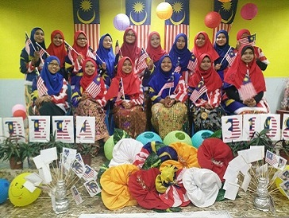
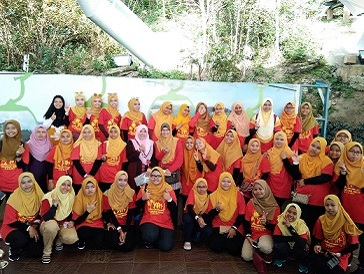
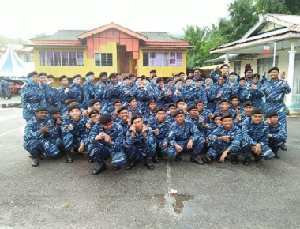
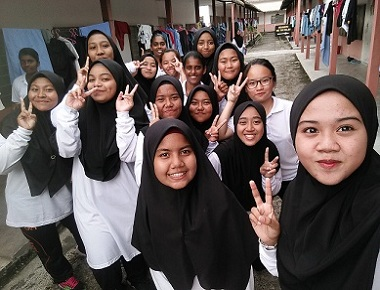
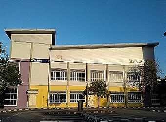
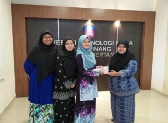

HOSTEL'S LIFE
 Hostels are place that have shared rooms and spaces. Every rooms and spaces at hostels need to be shared with other people. Hostels offers facilities such as study rooms, laundry rooms, dining hall and many more. During at my secondary education, I have decided to stay at hostel because my house is far away from my school. I stayed at hostel for 5 years. My hostel known as Aspuri SMK Tun Syed Sheh Barakbah. My school only did offer hostel facilities for girl only. There are no dormitories for boys.
Environment at hostel are very laid-back and collaborative. My hostel did organize a trip on every year. Trips that have been organized by my hostel are very memorable events. It is because I can spend more of my time with my friends. The places that I have been visited on all of these trips are Lost World of Tambun, Escape Penang, Kuala Lumpur, Cameron Highlands and Langkawi. I have joined my hostel's trips for five years. I did not miss any trips. In a hostel surrounding, you will always be enclosed by people just like you. The environment is favourable for creating new friendships and the exchange of experiences and many laughs.
Living in a hostel is an experience that will makes you grow as matured and independent person. You will greatly develop your collaborative spirit with other persons. You will not mind and awkward to share your food, drinks, stories and laughter anymore. Bonds that have been developed will created some good memories.
NATIONAL SERVICE TRAINING PROGRAMME
 PLKN (Program Latihan Khidmat Negara) or National Service Training Programme in English is a national service programme in Malaysia. It was introduced by the government in 2003. Under this programme, Malaysian youth who are 18 years old are selected at random for a three-month training stint.
In this programme, the youths will go through physical training such as marching, hand-to-hand combat, survival training, first aid training and others. The youths also need to attend lectures in classrooms. This lectures had taught me more about the country's history and I also have been reminded by teachers about my sense of responsibility and loyalty to the country.
However, the programme is not totally everything serious. Variety of games and activities that have been held in order to allow the youths to make new friends, interact harmoniously with each other and developed a sense of commitment, unity and cooperation.
I am one of the youth on year 2018. My camp named as Kem Sri Impian. Experiences that I went through from this programme have brought me the best memories. Till now I cannot forget everything that I have done and learn at PLKN. I don't regret going to PLKN at all. All the people I meet there were the best. They are totally like my second family there. In a nutshell, PLKN is the best programme that allows youth to learning independence. It certainly helps to moulding the youths into patriotic citizens with a strong character.
INDUSTRIAL TRAINING
 I have been doing my industrial training at Perpustakaan Tun Abdul Razak (PTAR) at Universiti Teknologi MARA (UiTM) Pulau Pinang, Bertam Campus along with my two friends, Siti Rasyiqah and Alya Shazwani. I choose PTAR Bertam as my place for industrial training because it located near my hometown. Along the industrial training I have stayed at college there. I take this as an opportunity in order to come early to work without having any problems. I started my industrial training on 13 January 2020 until 21 February 2020. Duration of my industrial training as practical student there is six weeks.
Perpustakaan Tun Abdul Razak branch UiTM Bertam (PTAR Bertam) was established on June 16, 1996 located at Permatang Pasir Campus for a while and in 2003 it moved to Permatang Pauh Campus. At this permanent campus, PTAR Bertam was located at Wing 1, Wing 2 and at the ground floor of Bangunan Perdana. On May 26, 2011 PTAR Bertam moved into its own building. Originally PTAR Bertam has two levels for their library. Unfortunately, UiTM Bertam has been used it as exam hall for their students. It is because their campus is so small and lack of facilities. Nowadays, PTAR Bertam only used one level only in order to place their collections.
Their collections consist of medical collections only. It is because there are two faculties only at UiTM Bertam. Which are Faculty of Pharmacy and Faculty of Health Science. They provide books and materials based on these two area only. Only several materials that not related to these two areas that are available in this library. Opening hours of PTAR Bertam is from 8.30 a.m. until 4.45 p.m. only. They are not operation during night and weekends.
Over there, Puan Nurhayati was in charged as my supervisor during my internship. On the first day there, she had briefing us about our duties and details about the library. Puan Nurhayati had given us a timetable that have a list of what we need to do during this internship. Puan Nurhayati will give us tasks according to the timetable given. Every day we need to record what have we done in log book. After one weeks, we need to get Puan Nurhayati signature for our log book as evidence.